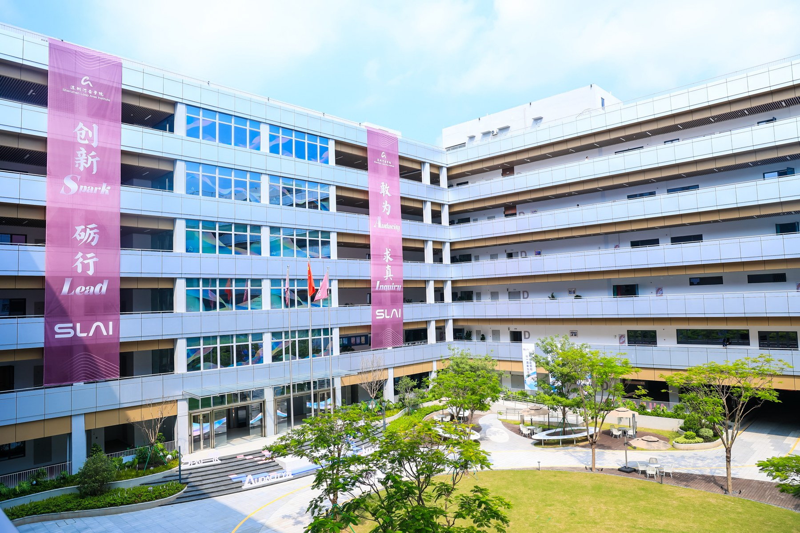
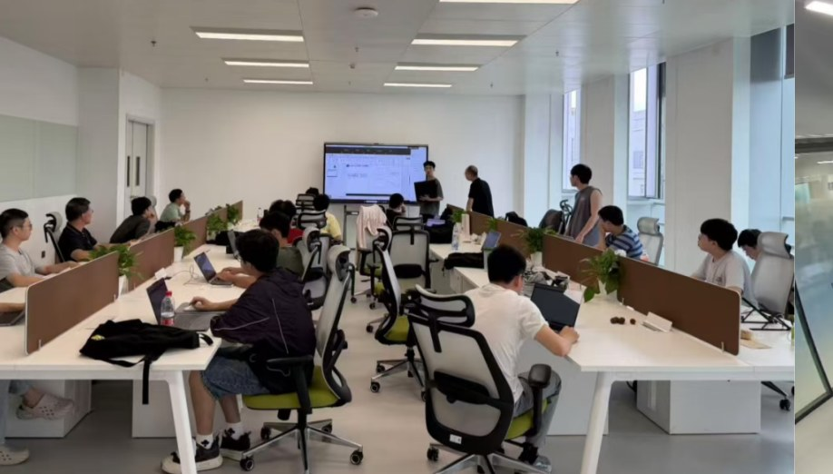
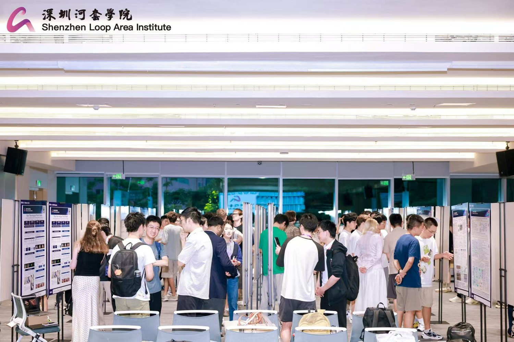
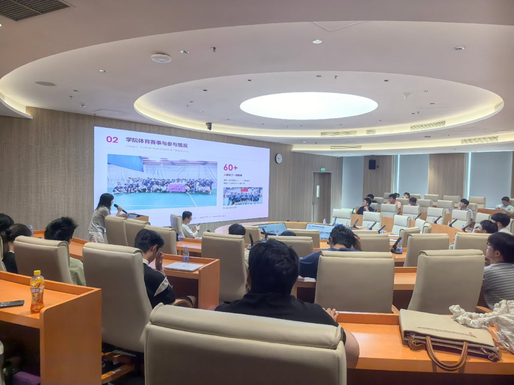
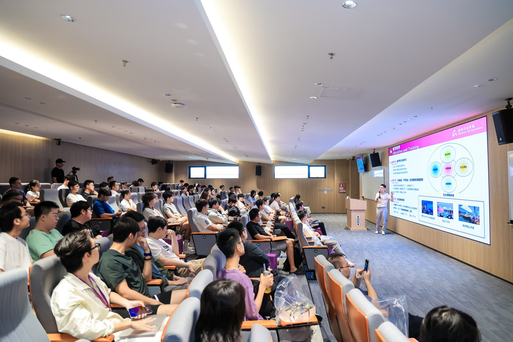
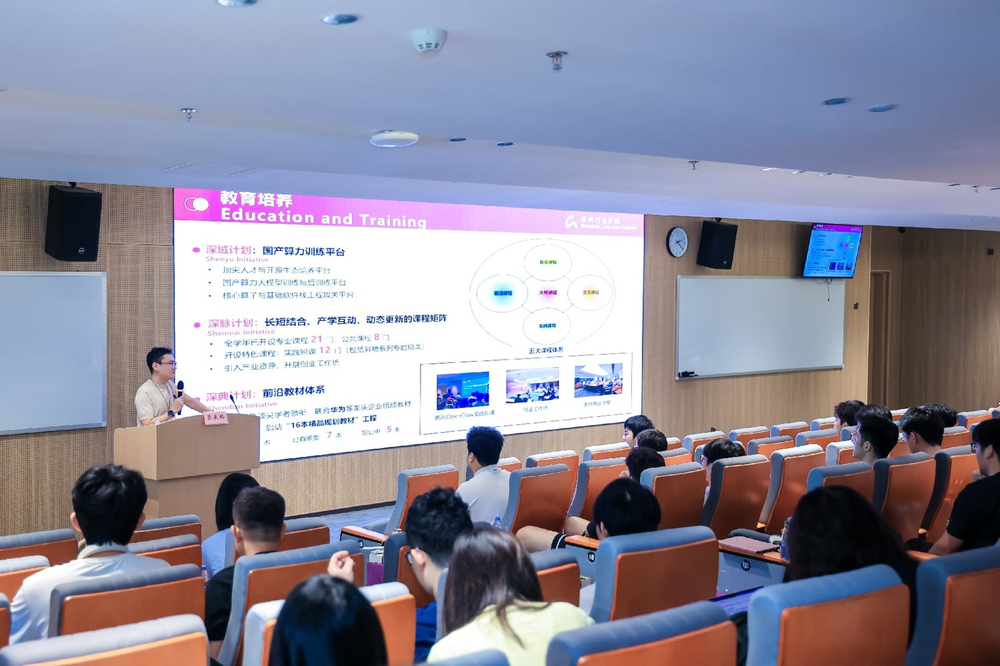

Research immersion
Become part of an SLAI research group and engage with real research projects.
A closer look at research.
A deeper experience of AI.
Join a research group at Shenzhen Loop Area Institute and work on real projects with personalized, one-to-one guidance from principal investigators and support from researchers.

~3 months of research immersion
One-to-one PI mentorship
Shenzhen China’s Greater Bay Area
Join the day-to-day work of an AI research group.
Work alongside researchers at SLAI, explore your interests through practical research, and discover an international, interdisciplinary academic environment.

Become part of an SLAI research group and engage with real research projects.
Develop your research practice through personalized, one-to-one guidance from a principal investigator, supported by experienced researchers.
Get to know SLAI’s research environment before considering your next academic step.
Deep Sight Research Program Plus is an approximately three-month research experience for enrolled undergraduate and full-time master’s students.
Through personalized, one-to-one PI guidance, participants gain hands-on experience by contributing to real, ongoing research projects. The program combines SLAI’s research platforms and faculty expertise with an immersive, fully practical approach to learning.
Take part throughout the research process: build firsthand research experience, develop a research mindset, and strengthen your academic and practical research abilities.
From the original Deep Sight program · 2026




At the poster showcase, participants presented progress on their research projects to mentors and peers, with individual mentor feedback and open academic discussion.
These are program dates, not application deadlines.
Program dates, eligibility and support are subject to the official announcement. Contact SLAI for the application timeline and current details.
International students currently enrolled in undergraduate programs, or full-time master’s students.
The official announcement will define the final eligibility and selection requirements.
Scholarship support is subject to the official program announcement and its terms.
Accommodation provided, excluding utilities.
Available for outstanding participants.
Support arrangements and conditions are subject to the official announcement.
Interested in joining the program?
Contact the External Affairs team for program details, application requirements and the latest arrangements for the 2027 rounds.
externalaffairs@slai.edu.cn Explore international PhD admissionsOutstanding participants may qualify for preliminary admission to joint PhD programs, subject to assessment and the relevant requirements. This is not automatic or guaranteed admission. Final doctoral admission follows partner-university requirements and the formal selection process.
The dates above are program periods. Please contact External Affairs for the official application timeline, required documents and application process.
The program information lists accommodation excluding utilities, scholarship support, and a travel grant for outstanding participants. Final support terms are subject to the official announcement.
Let the External Affairs team know your research interests when you enquire. The official program announcement will provide the available arrangements and requirements.